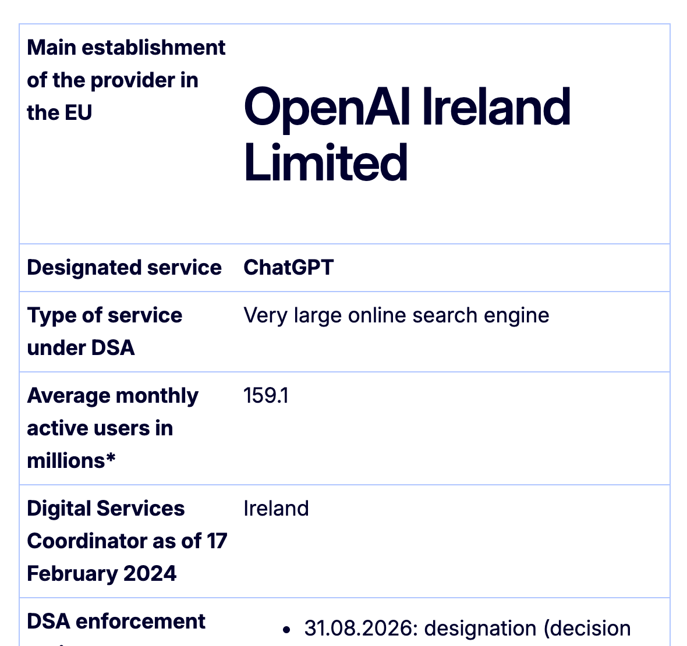

Executive Summary
On 31 August 2026 the European Commission designated ChatGPT a Very Large Online Search Engine under the Digital Services Act. It is the first time an AI chatbot has landed in that category. The reasoning rested on what ChatGPT does rather than on any new rule for AI. Because the service engages with a user's prompts and queries while also searching the web, the Commission treats it as a search engine in regulatory terms.
The label carries duties. OpenAI has to assess the systemic risks stemming from its service and its algorithmic systems at least once a year, submit to an independent audit at its own expense, and open data to researchers who pass a vetting process. The Commission gave the designated services four months, until January 2027. Non-compliance can attract penalties of up to 6% of global annual turnover.
What remains unsettled is the evidence those assessments and audits will rest on. For advertising, the Digital Services Act writes seven items straight into the text of the law. For which sources a generative answer searched and which of them it picked, there is no equivalent article.
Key figures
Sources: Commission press release (31 Aug 2026) · Commission list of designated services (updated 31 Aug 2026) · Regulation (EU) 2022/2065
159 million
EU monthly users of ChatGPT search
OpenAI's own disclosure, six-month average to March 2026. The designation threshold is 45 million
28
services in the strictest tier
The total once these three were added. Only Google Search, Bing and ChatGPT are search engines
3 years
retention of risk assessment documents
The period set by Article 34(3). What those documents must contain is left open
7 items
entries in the advertising repository
Listed in Article 39. Generative answers have no matching article
The day a chatbot was called a search engine
The Commission's announcement is short. It designated ChatGPT a Very Large Online Search Engine and Reddit and Roblox Very Large Online Platforms, noting that all three services declared that they reach at least 45 million average monthly users in the EU and thus meet the threshold for designation. A second sentence gives them four months, by January 2027, to comply with the additional obligations of the top tier. The Commission's list of designated services, updated the same day, records only the 31 August 2026 designation and adds that the decision is not yet available.
Function decided the category. Euronews reported that the Commission described ChatGPT as a hybrid service that qualifies as an online search engine under the DSA because it can engage with and respond to users' prompts and queries, including by searching the web. Reddit and Roblox went the other way for a simpler reason: both allow users to create and share content publicly, which makes them platforms.
The three services are not in comparable positions. OpenAI disclosed that ChatGPT's search function averaged about 159 million monthly active users in the bloc for the six months ending March 2026, more than three times the threshold. The figures on the Commission's list, all self-declared, read 159.1 million for ChatGPT, 57.2 million for Reddit and 46.6 million for Roblox. Roblox cleared the line by 1.6 million. With these three added, the DSA's strictest tier now covers 28 services.

Look only at the search engines and ChatGPT's position gets sharper. Since the DSA took effect, exactly two services had been designated Very Large Online Search Engines: Google Search and Bing. The same list puts them at 364 million and 119 million users. ChatGPT arrives third and passes Bing on the way in.
The German technology outlet heise read the designation this way: the AI Act regulates based on the technology, not based on the actual use of offerings and the resulting risks, and this decision turns on the second. ChatGPT now joins a roster that holds YouTube, Instagram, Google Search and Temu. A designation is not a finding of wrongdoing. It fixes the date from which the extra obligations bite, and the Commission supervises directly while working with the authority in the member state where the provider has its EU headquarters. For OpenAI Ireland Limited that authority is Coimisiún na Meán. The name is worth holding on to, because it is the body that writes the reasoned request in the researcher data access route below.
Researchers at Télécom Paris and Inria had already mapped this route. Their opinion paper, published in the June 2025 issue of ACM SIGIR Forum, put it almost exactly as it happened.
"Once ChatGPT search reaches 45 million active users per month in Europe on average, it will likely be subject to the DSA's obligations to conduct risk assessments and propose mitigation measures."
The footnote attached to that sentence points at Articles 34 and 35, the risk assessment and mitigation duties that now apply. The same passage records that OpenAI had already taken measures to comply with the DSA, apparently considering that ChatGPT search is a search engine for DSA purposes, and cites OpenAI's own help page as the evidence. The surprising part of the August announcement is not the classification. It is that the classification finally took effect.
Three duties that arrive with one label
Entering the top tier triggers three articles at once. Article 34 requires providers to identify, analyse and assess any systemic risks stemming from the design or functioning of their service and its related systems, including algorithmic systems, at least once a year. Article 37 puts compliance under an independent audit, at the provider's own expense, at least once a year. Article 40(4) opens data to vetted researchers studying systemic risks. None of the three has ever been applied to a generative search product.
| Article | What it requires | Frequency or trigger |
|---|---|---|
| 34 Risk assessment | Identify, analyse and assess systemic risks from the service and its algorithmic systems | At least once a year, and before deploying critical functionalities |
| 34(3) | Preserve the supporting documents of the assessment and communicate them on request | At least three years after the assessment |
| 35 Risk mitigation | Reasonable, proportionate and effective measures tailored to the risks identified | With consideration of the impact on fundamental rights |
| 37 Independent audit | External audit of compliance with the Chapter III obligations | At least once a year, at the provider's own expense |
| 40(3) Algorithmic explanation | Explain the design, the logic, the functioning and the testing of the algorithmic systems | On request from the Commission or the coordinator |
| 40(4) Data access | Give vetted researchers access to non-public data | Upon a reasoned request from the coordinator of establishment |
| 42(4) Publication | Publish the risk assessment results, the mitigation measures and the audit report | Within three months of receiving the audit report |
▲ Core obligations of the strictest tier | Source: Regulation (EU) 2022/2065, Chapter III, Section 5
Article 34(2) also names what has to be taken into account: the design of the recommender systems and any other relevant algorithmic system, the content moderation systems, the terms and conditions and their enforcement, the systems for selecting and presenting advertisements, and the data related practices of the provider. Read against ChatGPT, that means the way an answer pulls in sources and weights them is squarely inside the assessment.
One more article takes direct aim at the algorithm. Article 40(3) says that at the request of the Commission or the coordinator of establishment, providers shall explain the design, the logic, the functioning and the testing of their algorithmic systems, including their recommender systems. What it asks for is an explanation. It does not say what the explanation has to rest on, or in what form the provider is supposed to hold the record that would back it up.
Researcher access comes with its own procedural rulebook. The Commission adopted Delegated Regulation (EU) 2025/2050 on 1 July 2025, and it has applied since 20 days after publication in the Official Journal that October. It sets up a DSA data access portal and requires providers to publish, on their own online interfaces, a DSA data catalogue describing the data assets that may be requested along with their data structure and metadata. Article 15 goes further: when data is handed over, the provider must supply any additional information needed to access and understand it, such as codebooks, changelogs and architectural documentation.
Read this far and the procedure looks tight. Who applies, which authority vets them, what documentation travels with the data: all of it is written down article by article. What is not written down is whether the data the procedure will reach for exists in the first place.
An article for ads, none for answers
The Digital Services Act is perfectly capable of specifying a record format. Article 39 does it for advertising in detail. Providers in the top tier have to compile and publish an advertisement repository, and paragraph 2 lists at least seven things it must include: the content of the advertisement, the person on whose behalf it is presented, the person who paid for it if that is someone else, the period during which it was presented, the main parameters used if it targeted particular groups, the commercial communications identified under Article 26(2), and the total number of recipients reached. Retention runs to one year after the advertisement was last presented, and the repository has to be served through a searchable tool that allows multicriteria queries and through application programming interfaces.
Generative answers have no counterpart to that article. Article 34(2) names algorithmic systems as an object of assessment and Article 34(3) requires the supporting documents to be preserved for three years, but what those documents are is left to the provider. Nowhere does the regulation say to keep a record of which candidate sources a given query retrieved, which of them the answer cited, and why they came in that order.
Someone will reasonably object that the citation links under an answer are a record in themselves. The paper quoted above is blunt about what those links are worth. Retrieval-augmented models such as ChatGPT "might cite any source that itself cites the original source; they might make up answers and pretend they come from the source; and they might also make up sources." A citation attached to an answer is part of the answer, not a log of the search behind it.
heise pointed at the same gap from the enforcement side. The EU does not provide an exhaustive list of the dangers and risks to be identified, but threatens high fines if dangers are ignored by the operators. An open-ended risk list is sound regulatory design, because new harms can be caught without amending the text. Seen from the provider's desk, the same flexibility means nobody has said how thorough a record has to be before it is safe.
The data catalogue required by the delegated regulation does not close the gap either. A catalogue is a document describing accessible data assets and their structure. The delegated regulation wants it to cover data related to the risks a provider identified under Article 34 and to the mitigation measures under Article 35, and to be updated regularly to reflect risk assessments and audits. In the same breath it states that DSA data catalogues should not be required to be exhaustive. The catalogue therefore trails behind whatever the earlier assessment already produced. What the system never recorded is not in the catalogue. However smoothly a vetted researcher files through the portal and a coordinator drafts a reasoned request, the end of that procedure is an empty shelf if the material was never generated.
The auditable record has to come first
Work backwards from what Article 34(2) asks anyone to assess and the requirements become concrete. To show how the design of an algorithmic system bears on risk, you have to be able to reconstruct, after the fact, which candidate sources a repeated query pulled up and which of them reached the final answer. To see how a provider's data related practices bear on risk, you need to know which index and which model version produced that answer. The regulation does not ask for any of these items. Without them, the assessment Article 34 demands is a narrative nobody can check.

Auditors have been given wide powers. Article 37(2) requires providers to give the auditing organisations access to all relevant data and premises and to answer oral or written questions, and to refrain from hampering, unduly influencing or undermining the audit. That authority reaches as far as the data that exists.
Timing matters too. Article 34(3) requires supporting documents to be preserved for three years and Article 42(4) requires the assessment results and the audit report to be published. Preservation and publication apply only to records already in hand. Whatever the system did not capture at the moment an answer was composed cannot be manufactured later. That makes this obligation less a compliance department drafting documents against a deadline and more a design question about where to place recording points along the path an answer travels.
The question is not OpenAI's alone. Any provider running a conversational product with search attached in the EU meets it as its user count approaches the threshold. What are we capturing today, and would that record alone let us walk an external auditor through the path of a single answer a year from now? If both answers are no, the thing to fix ahead of the regulation is the log schema rather than the document template.
Europe has asked for a measurable surface on the black box of generative search. Nobody has yet written down what that surface should look like, and the party that has to work it out by January 2027 is the provider rather than the regulator.
Editor's Note
When we talk about data quality, training data is usually what comes to mind. This designation points at the other end, the record left behind at the moment a model produces an answer. That is why preparing AI-Ready Data does not stop at tidying the inputs. The grounds for an answer have to sit in the same ledger as the inputs before a system can respond to anyone who asks about it later.
References
Official documents & legislation
- 1.European Commission. (2026). "Commission designates ChatGPT, Reddit, Roblox under Digital Services Act." Shaping Europe's Digital Future.
- 2.European Commission. (2026). "Supervision of the designated very large online platforms and search engines under DSA." Shaping Europe's Digital Future.
- 3.European Parliament and Council of the European Union. (2022). Regulation (EU) 2022/2065 (Digital Services Act). Official Journal of the European Union.
- 4.European Commission. (2025). Commission Delegated Regulation (EU) 2025/2050. Official Journal of the European Union.
News coverage
- 5.Euronews. (2026). "EU places ChatGPT, Reddit and Roblox under strictest digital safety rules."
- 6.Steiner, F. (2026). "DSA: EU Commission classifies ChatGPT as "very large search engine"." heise online.
Academic paper
- 7.Sadeddine, Z., Maxwell, W., Varoquaux, G., & Suchanek, F. M. (2025). "Large Language Models as Search Engines: Societal Challenges." ACM SIGIR Forum (Opinion Paper).